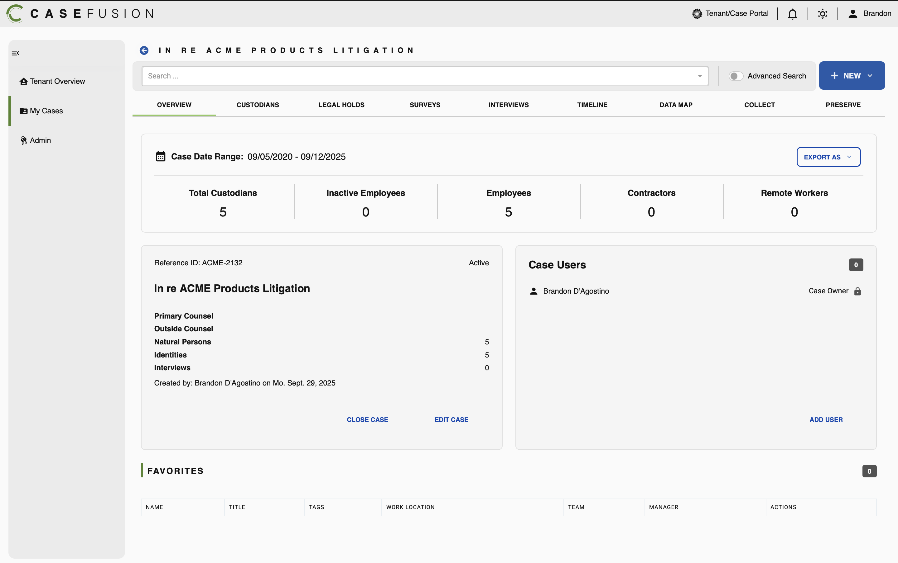
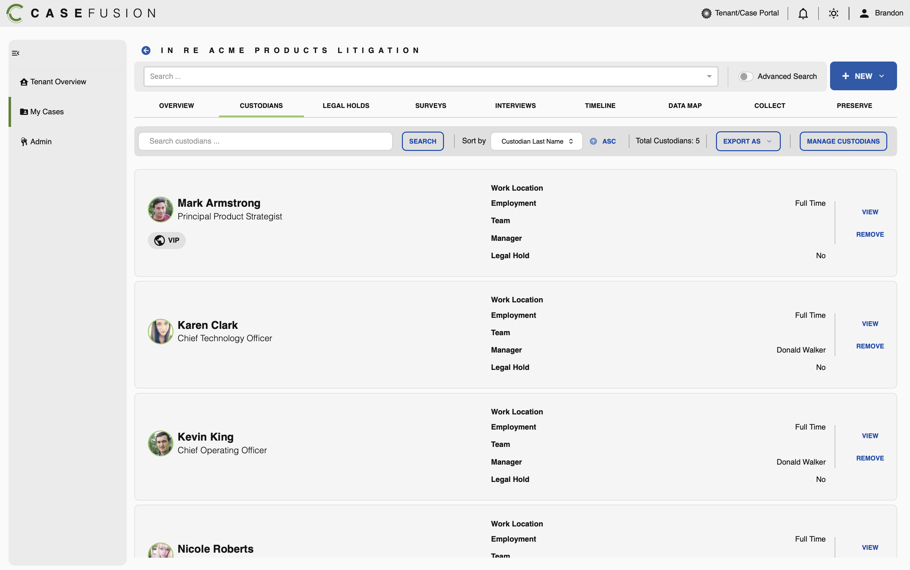
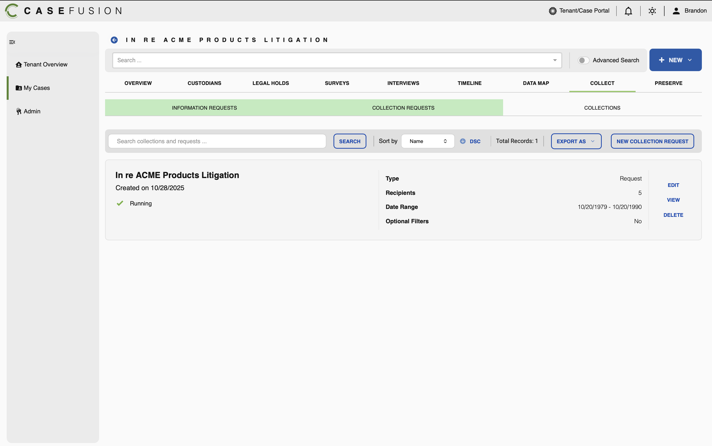

Patterns CaseFusion shows
that nobody has defined yet.
From the three CaseFusion screens, I'm filtering only what is not already covered by
(a) Nimbus on GitHub, (b) our existing _shared/expireon-app.css, or (c) the previous Designer-Mockup gap-analysis.
Everything else stays Nimbus-default. Below: 16 genuinely new patterns and variants
— organized so they can land in either Nimbus v2 or the shared Cloudficient app layer.
The three reference screens
CaseFusion · production


At a glance
16 new findings in 3 categoriesGenuinely new patterns
not in Nimbus, not in our app-css, not in the designer mockupTop-Bar Shell · brand + context + utilities
CaseFusion's header is a full-width white bar with brand top-left, a context indicator ("Tenant/Case Portal" with a small ring icon), notification bell, theme toggle, and avatar+name. No search field — search lives further down in the page header. Different from Expireon's TopNav (search-centric) and very different from the designer's mockup.
imagevisible in all three screenshots, top edgeRecord-Context Tab Bar
Within a single case, CaseFusion uses a horizontal tab strip for context-internal sections (OVERVIEW · CUSTODIANS · LEGAL HOLDS · SURVEYS · INTERVIEWS · TIMELINE · DATA MAP · COLLECT · PRESERVE). The active tab has a green underline (~3 px) plus bolder text. This is the entire "second-level nav" inside a case — totally different from Expireon's sidenav-only model.
imagescreenshots 01–03, below the page titleBack-Arrow + All-Caps Page Title
A blue circular back-arrow icon button + the page title in all-caps with very wide letter-spacing: "IN RE ACME PRODUCTS LITIGATION". Way more prominent than a breadcrumb, and serves as the record identifier across all sub-tabs.
imagetop of every case screenPage-Level Search Bar + "NEW ▼"
A wide search field directly below the page title, with "Advanced Search" toggle next to it and a solid primary "NEW ▼" CTA in the far right. This is page-level, not toolbar-level — it searches across the whole record. The Expireon designer put search inside a data toolbar; CaseFusion lifts it to the page chrome.
imagescreenshots 01 and 03Two-Column "Detail + Sidecard" Overview
Below the KPI strip, the Overview lays out as two cards side by side: a main detail card (Reference ID, Primary Counsel, counts, Created-by) and a sidecard (Case Users with a numeric badge). Each has a footer with text-link actions (CLOSE CASE / EDIT CASE · ADD USER). New compound pattern — not in our datatable-only layer.
imagescreenshot 01People-Row List View
Each custodian renders as a soft-gray rounded row-card: circular profile photo (with green status ring), name + title left, key/value attribute grid in the middle (Work Location / Employment / Team / Manager / Legal Hold), VIEW + REMOVE text-link actions vertically stacked on the far right. This is a fundamentally different layout from a datatable — it's "people as cards in a list" and is the future P2 (Custodians / Modules / Languages).
imagescreenshot 02Sub-Tab Pill Strip
Within the COLLECT tab, a secondary tab strip (INFORMATION REQUESTS · COLLECTION REQUESTS · COLLECTIONS) renders as a large soft-green pill background spanning the active item's full width, with the other items as plain text. Different from both Nimbus .nav-tabs and our pill-style sub-tabs — visually heavier, more "section-banner" than nav.
Tenant/Case Context Switcher
In the top-bar, a tiny "Tenant/Case Portal" indicator with a small ring icon. Likely a context switcher — clicking it changes which tenant or case you're viewing. Not the same as a workspace switcher in Nimbus; this is a record-scope selector. Completely undocumented.
imagetop bar, every screenVariants of patterns we already have
decision needed: align across products or branch?KPI Strip · divider-separated, no card borders
CaseFusion's KPI strip is one wide rounded container with thin vertical dividers separating each metric. No per-card borders or shadows. Label above, big number below — same vertical order as ours, but the visual treatment is "one bar, five readings". Cleaner and more enterprise than five separate cards.
Ours: five separate rounded cards with borders. CaseFusion: one container, internal dividers, no per-cell border.
imagescreenshot 01, top sectionToolbar · "Sort by [Field] [↑ ASC]" pattern
Instead of clickable column headers (datatable style) or a "Show: All ▼" dropdown (Expireon Designer-Mockup), CaseFusion uses an explicit Sort-by control with the field as one dropdown and the direction as a separate toggle (ASC/DSC). Makes sort discoverable when the view isn't a tabular grid — perfect for the people-row list.
Decision: probably ours when in card/people-row view, datatable-headers when in table view. The view-toggle (Q8) drives which one.
imagescreenshots 02 and 03, toolbar rowPrimary CTA · "+ NEW ▼" with caret
CaseFusion's primary always reads "+ NEW ▼" — a verb + entity-type-dropdown pattern. One slot, many possible record types. Different from our explicit "New Endpoint / New User / New Role" buttons. Saves toolbar real-estate and works well when a record can spawn multiple child types.
Open question: always-dropdown ("NEW") or context-specific ("NEW ENDPOINT")? CaseFusion-style is more compact; Expireon-style is more discoverable.
imagetop-right of every screenCard-Footer Actions · text-links in primary color
Card footers in CaseFusion use uppercase text-links in the brand-primary color (CLOSE CASE · EDIT CASE · ADD USER · VIEW · REMOVE). No buttons, no borders. Pure typographic action-cluster. We currently use solid/outline buttons in card-footers — this is much lighter visually.
imagescreenshots 01 and 02, right side of every cardStatus Indicator · "✓ Running" mini-chip
A small green checkmark + label ("Running", "Active", "Done") appears inside rows and cards as a status reading. Not a badge with background, not a dot+text — just icon + colored label inline. Tighter than our .status dot-pattern.
Tiny but recurring
small atoms that show up in every screen, every productTheme Toggle (sun/moon)
A standalone sun-icon button in the top bar, presumably toggling light/dark. Nimbus has data-cnds-theme + a full dark.css, but no documented UI for the toggle itself. Both products need it.
Avatar with Status Ring
Profile photos rendered with a green outer ring indicating active/online state. Adds presence-info without a separate dot. Same primitive in Expireon Audit Logs (we use plain bubbles), CaseFusion uses ringed photos. Worth defining as a shared variant.
imagescreenshot 02, every custodian rowVIP / Tag-Chip with leading icon
In the Custodians list, "VIP" appears as a chip with a leading globe-icon. Small, neutral background, slightly rounded. This is a domain-tag pattern (VIP, Confidential, Pinned, Featured…) that recurs across admin UIs. Not the same as a status badge — it's a soft labelling primitive.
imagescreenshot 02, under Mark Armstrong's nameWhat this means
Cloudficient already has a real application-pattern vocabulary — it just lives in product code, not in Nimbus.
Between the Expireon Designer-Mockup (14 gaps) and the CaseFusion screens (16 findings), there are now ~30 application-layer patterns that two production products clearly need, that the official Nimbus DS does not document. The good news: every one of them is real, working code somewhere.
The interesting question is not "which is right?" — it's "which should be the cross-product standard?". The KPI-strip-with-dividers (V1), text-link card-footers (V4), and record-context tabs (N2) feel like patterns Expireon should adopt from CaseFusion. The mega-KPI cards (Expireon designer) and the rows-per-page pager (also Expireon designer) feel like patterns CaseFusion should consider.
Practical next step: when we go into P2 (Custodians + the card-view family), we should explicitly use the CaseFusion People-Row Card Pattern (N6) rather than invent a new one. That alone aligns Expireon with the design CaseFusion is already shipping.
Proposal · what to do now
- P2 Custodians screen adopts N6 People-Row Card 1:1 from CaseFusion. Saves us from inventing. Validates cross-product consistency.
- P2 Overview-style screens (single-record details like Endpoints-Detail or Case-Overview-style) get N5 Two-Column Detail+Sidecard with V4 text-link footers.
- Add a shared "case-context shell" variant to the app-css: N2 Record-Context Tabs + N3 All-Caps Title. We probably don't need this immediately for the 11 datatable screens, but the moment we hit a record-detail screen, we'll need it.
- Park N1 Top-Bar Shell & N4 Page-Level Search for now — Expireon already chose a search-in-toolbar TopNav. Revisit if/when the products consolidate.
- Tiny ones (T1–T3) are 30-minute additions to
expireon-app.csswhenever they're first needed. Don't pre-build.